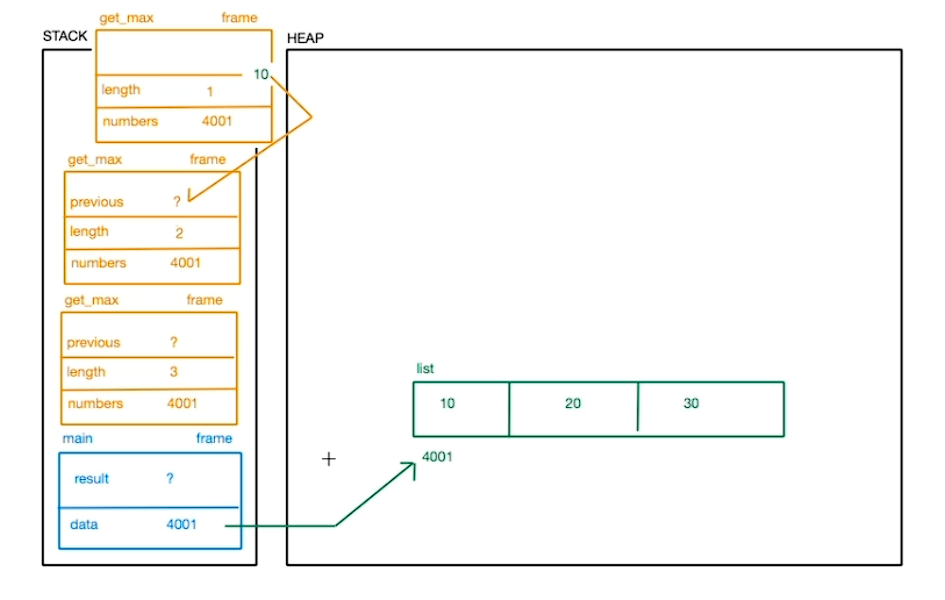
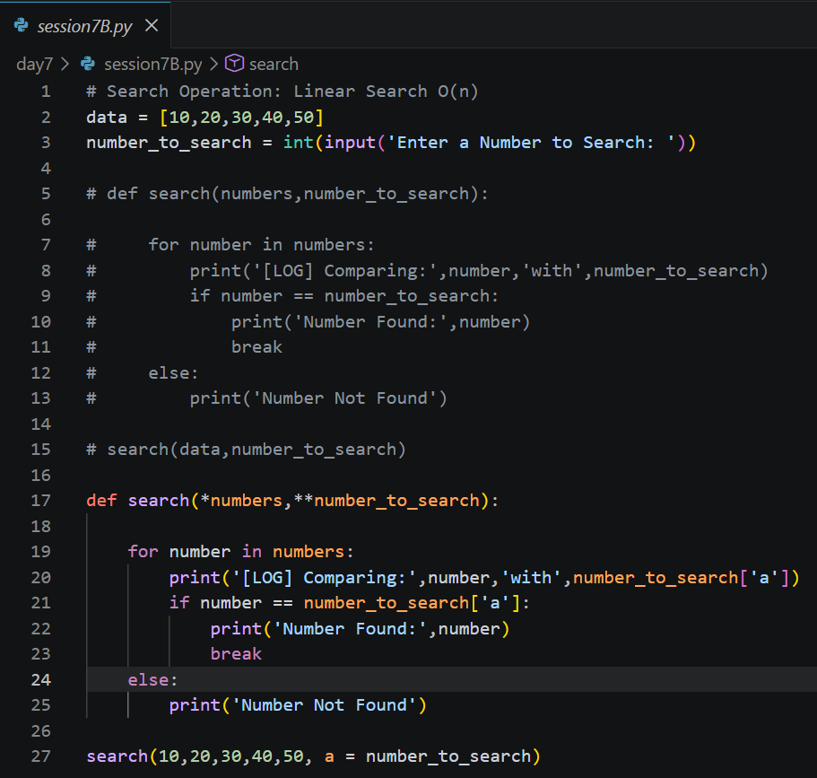
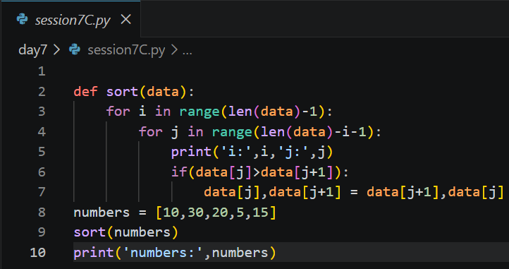
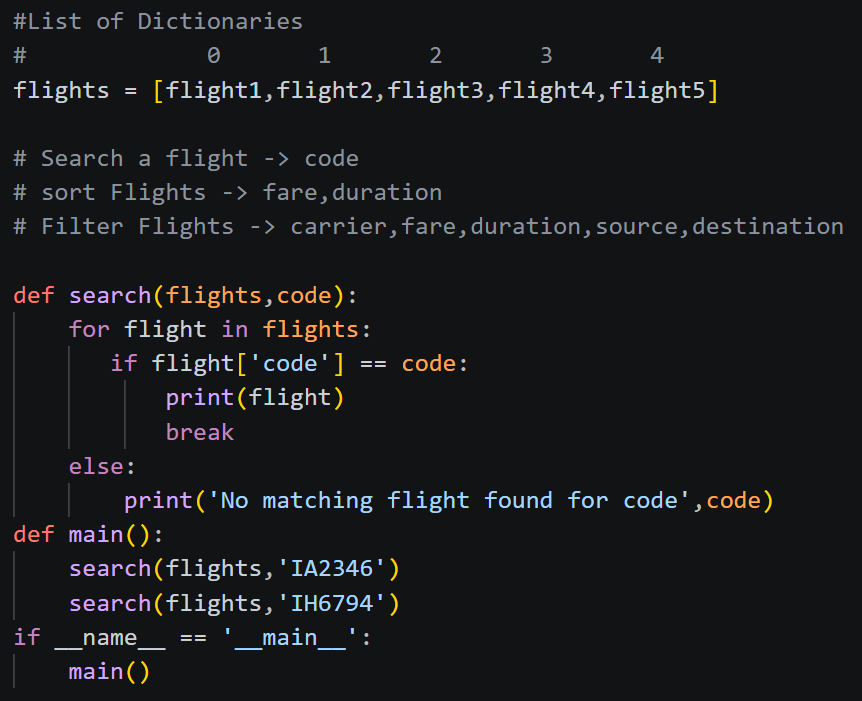
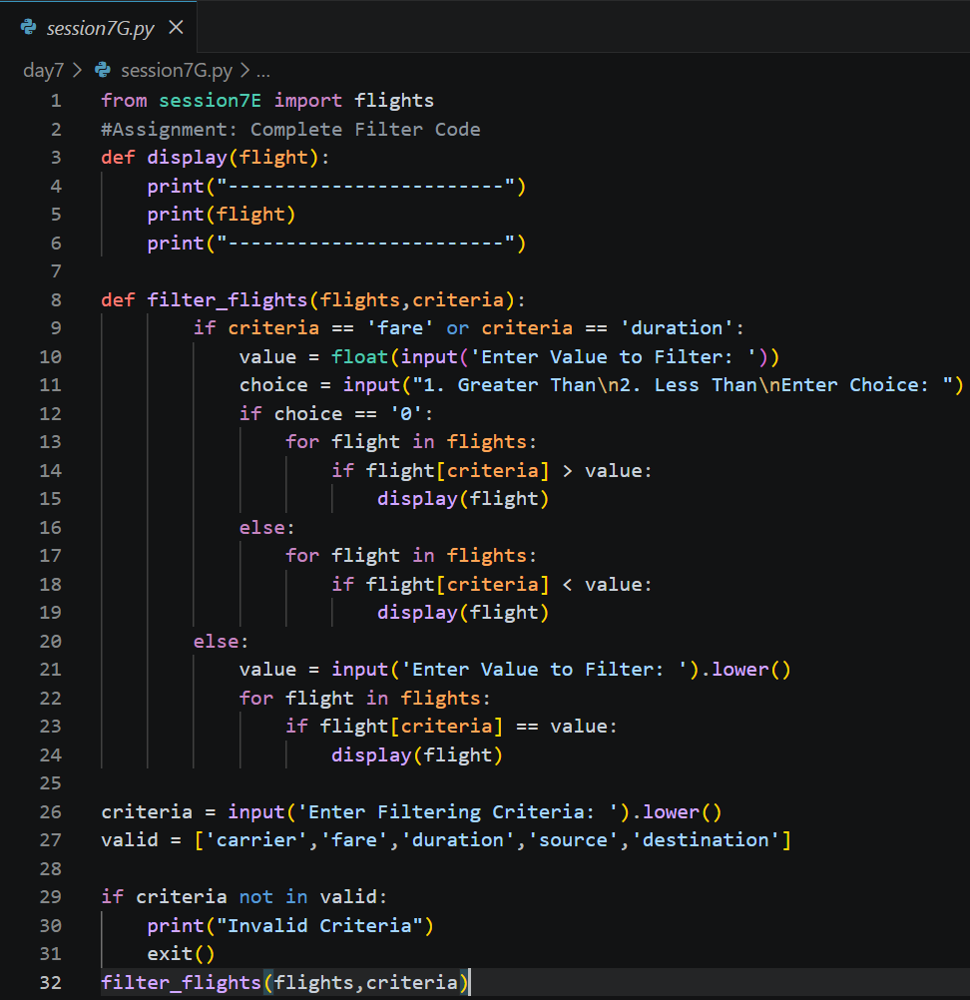

Day 7 – Recursion, Searching, Sorting & Filtering
Date: 2 July 2026
Duration: 2:00 Hrs
Training Company: Auribises Technologies
Trainer: Ishant Kumar
Session Overview
Today's session focused on understanding recursion in depth and visualizing how recursive function calls are executed using Stack and Heap memory. We also implemented searching, sorting and filtering algorithms, and finally applied these concepts to a real-world flight management dataset represented as a list of dictionaries.
Recursion
The trainer explained recursion as a technique where a function repeatedly calls itself until a terminating condition, known as the base case, is reached. We learned that every recursive call creates a new stack frame, allowing Python to remember the execution state of each function until it returns.
Practical programs were implemented to understand recursive execution, base cases, recursive calls and how problems can be divided into smaller sub-problems.

Stack & Heap Memory Representation
One of the most interesting parts of today's session was understanding how recursion is represented in memory.
The trainer demonstrated how every recursive function call creates a separate stack frame while Python objects continue to reside in heap memory. As recursion reaches the base case, stack frames are removed one by one until execution returns to the original function.

Recursive Programs
Multiple recursive programs were implemented to strengthen our understanding of recursion.
- Finding the maximum element of a list recursively.
- Calculating the product of list elements using recursion.
These programs demonstrated how recursive functions process data by reducing the problem size with each function call until the base condition is satisfied.

Searching Algorithms
After recursion, we moved to searching techniques. A reusable Linear Search function was implemented to locate elements inside a list.
Instead of hardcoding values, the search operation accepted parameters, making it reusable for different datasets.
- Linear Search
- Reusable search functions
- Searching using parameters

Bubble Sort
We implemented the Bubble Sort algorithm to arrange elements in ascending order. The trainer explained how adjacent elements are repeatedly compared and swapped until the list becomes completely sorted.
This activity helped us understand the working of one of the most fundamental sorting algorithms and the importance of nested loops while implementing comparison-based sorting techniques.

Filtering Data
After implementing searching and sorting, we learned how to filter datasets by selecting only those records that satisfy a given condition.
Filtering was demonstrated using both simple lists and a collection of dictionaries, preparing us to work with structured real-world datasets.

Search, Sort & Filter on Flight Data
Towards the end of the session, we applied searching, sorting and filtering techniques on a flight management dataset represented as a list of dictionaries.
Each flight stored multiple attributes including flight code, airline, source, destination, fare and duration. Reusable functions were created to search flights, sort them dynamically and prepare the dataset for filtering operations.


Python Programs Implemented
- session7.py – Finding the maximum element using recursion.
- session7A.py – Calculating the product of list elements recursively.
- session7B.py – Implementing Linear Search using reusable functions.
- session7C.py – Bubble Sort implementation using nested loops.
- session7D.py – Filtering elements based on conditions.
- session7E.py – Creating a flight dataset using a list of dictionaries.
- session7F.py – Searching and sorting flight records dynamically.
- session7G.py – Completing the flight filtering system.
Class Activity
During today's practical session, we implemented recursive algorithms and visualized their execution using Stack and Heap memory representation.
We also developed reusable functions for searching and sorting flight records stored inside a list of dictionaries, demonstrating how common algorithms can be applied to structured real-world data.

Assignment
The assignment for today's session was to complete the filtering functionality of the Flight Management System developed during the practical session.
I implemented a reusable filtering function capable of retrieving flights based on different user-defined criteria. The program supports filtering using:
- Carrier
- Fare (Greater Than / Less Than)
- Duration (Greater Than / Less Than)
- Source
- Destination
The solution also validates user input and uses reusable helper functions to improve code readability and maintainability.

Assignment Solution
I completed the assignment by implementing a reusable filter_flights() function that filters the flight dataset according to the selected criteria. Numeric attributes such as fare and duration support both greater-than and less-than comparisons, while textual attributes are matched directly.
This assignment combined searching, sorting and filtering concepts with real-world structured data, reinforcing the importance of modular and reusable programming.
Key Learning Outcomes
- Understood recursion using stack and heap memory visualization.
- Learned the importance of base cases in recursive functions.
- Implemented recursive algorithms for solving list-based problems.
- Practiced Linear Search and Bubble Sort from scratch.
- Applied filtering techniques to structured datasets.
- Worked with real-world flight data using a list of dictionaries.
- Designed reusable Search, Sort and Filter functions.
Personal Reflection
Today's session was one of the most interesting and practical so far. Visualizing recursion using stack and heap memory made the execution flow much easier to understand. Implementing searching, sorting and filtering algorithms on a real-world flight dataset demonstrated how fundamental programming concepts can be applied to solve practical problems. The assignment also helped strengthen my understanding of writing reusable and modular Python functions.
Next Session
The trainer informed us that the next session will continue with advanced Python concepts and further strengthen problem-solving skills through practical programming exercises.